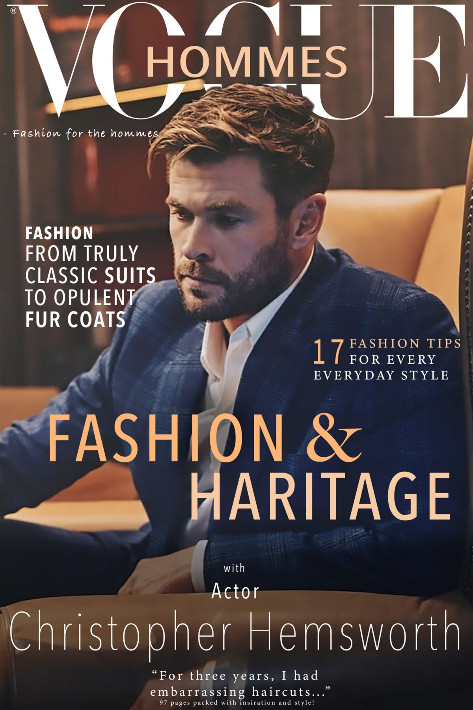
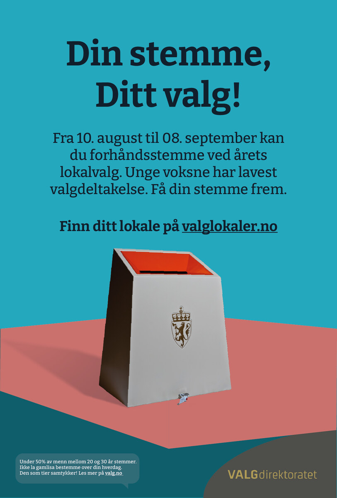
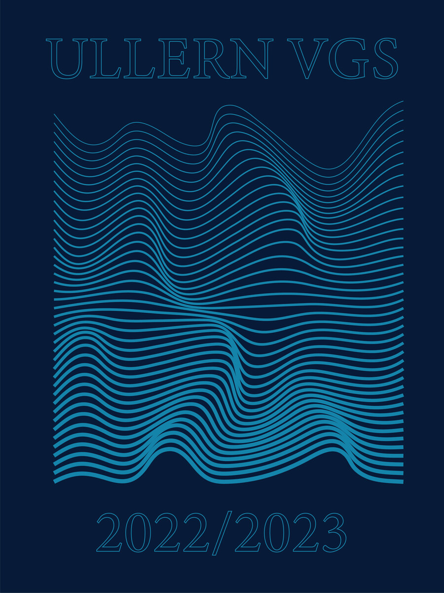
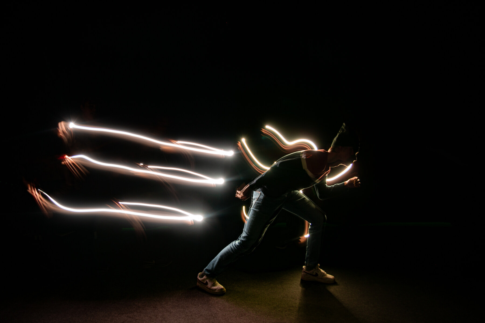
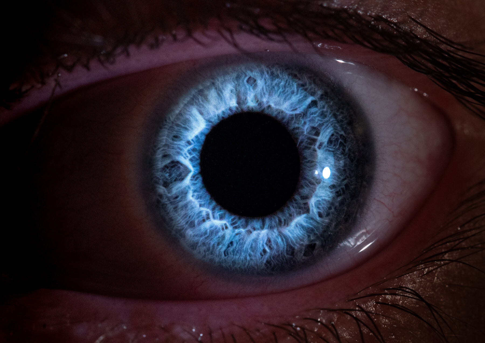

Vogue Hommes – magasinlayout
Et sju siders magasinutkast med forside, innholdsfortegnelse og redaksjonelle oppslag.
Arbeid fra studier, egne tekniske prosjekter og tidligere arbeid med medier og design.
BDIGSEC · NTNU
Prosjekter fra bachelorstudiet i Digital infrastruktur og cybersikkerhet (BDIGSEC), med plass for arbeid innen nettverk, cybersikkerhet, Linux, servere og infrastruktur, sky, programmering og databaser.
Ingen BDIGSEC-prosjekter er publisert ennå. Seksjonen er klar for prosjektbeskrivelser, teknologier, perioder og egne prosjektsider.
Tidligere arbeid
Tidligere arbeid innen grafisk design, visuelle identiteter, foto, video og medieproduksjon.

Et sju siders magasinutkast med forside, innholdsfortegnelse og redaksjonelle oppslag.


Forsidedesign bygget rundt bølgende linjegrafikk og en begrenset mørk blå og turkis fargepalett.

Fotografisk serie som kombinerer sportsbevegelse med tegnede lysspor og lang eksponering.
